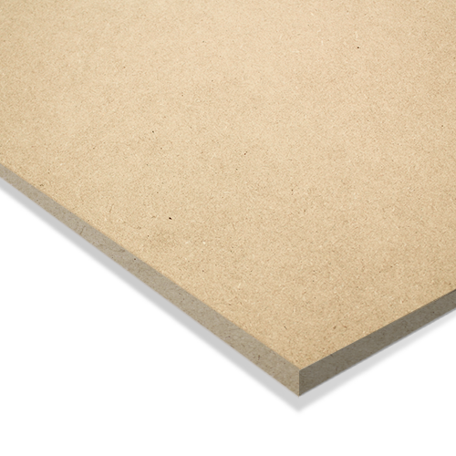

전국 자재 유통망 실시간 시세를 기반으로 합니다.
전주 대비 하락
최근 하락세
현장의 목소리를 담아 품질과 가격을 모두 잡았습니다.
01. 친환경 E1 등급
유해물질 걱정 없는 안전한 품질
02. 뛰어난 가공성
면이 고르고 단단하여 가구 제작에 최적
03. 전국 유통망
한솔, 유니드 등 국내 최고 브랜드 취급
04. 압도적 가성비
대량 수입 및 유통 간소화로 거품 제거

Medium Density Fiberboard
MDF 두께별 주요 물성 (KS F 3200 인증 기준)
* 상기 수치는 KS F 3200 기준이며, 실제 제품은 약간의 편차가 있을 수 있습니다.